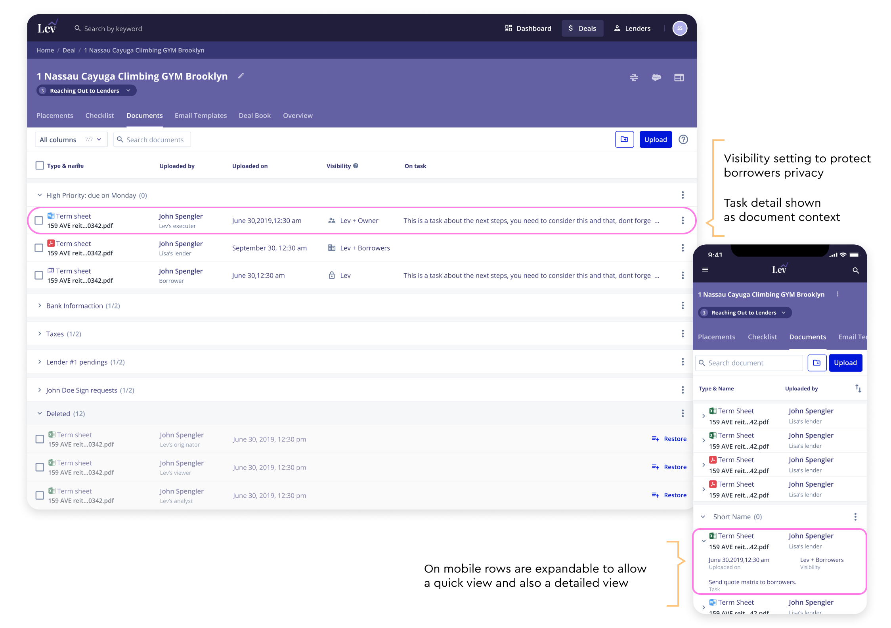
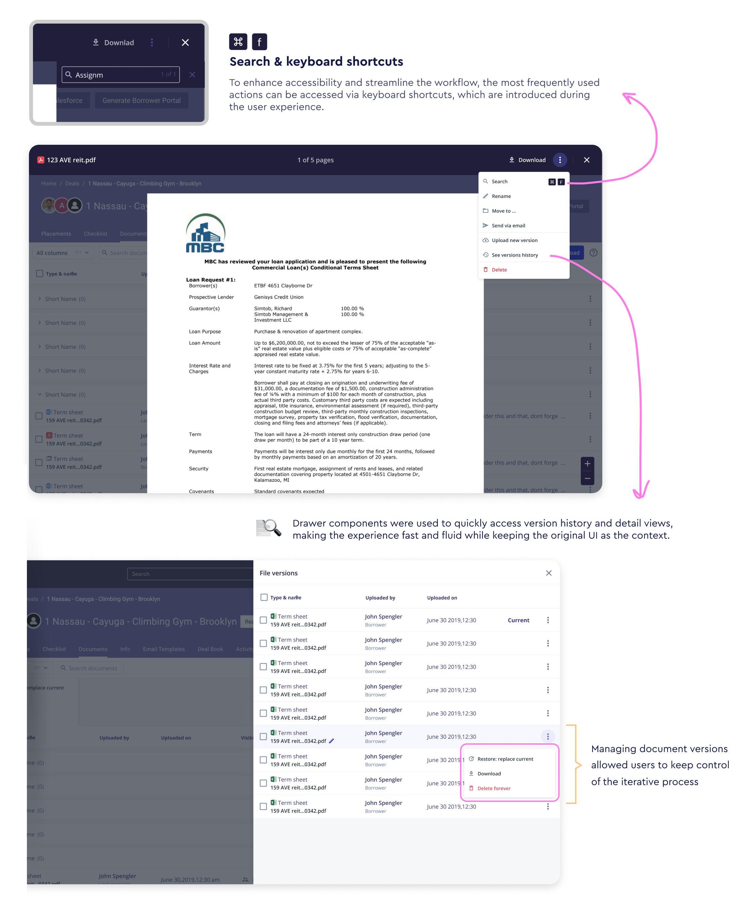
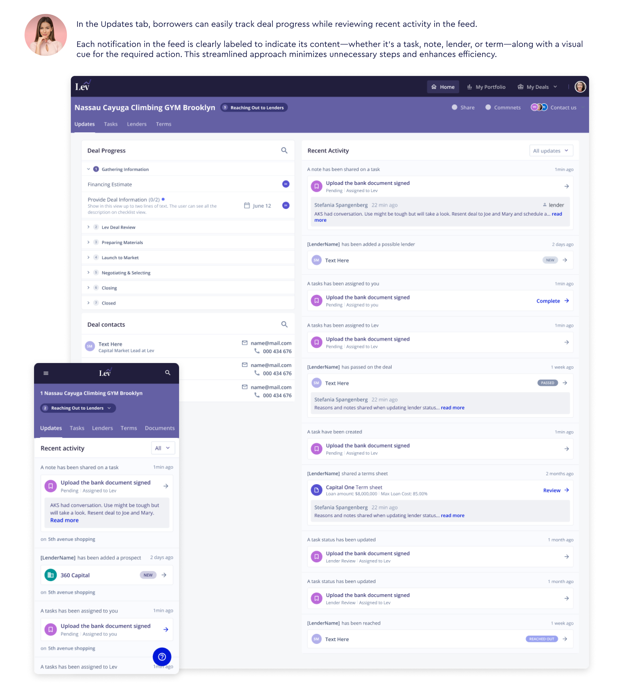
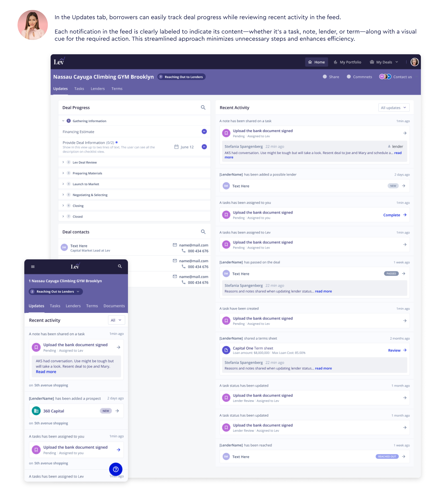
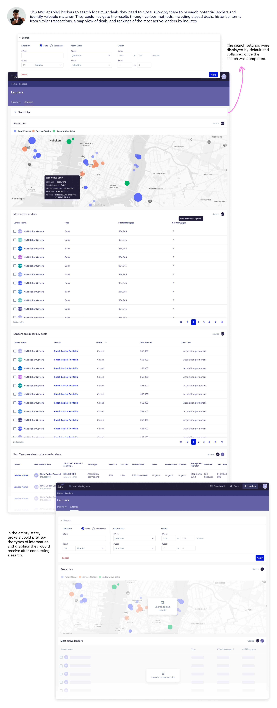

Lev:Commercial real estate transactions, rebuilt.
NYC 2022
The Goal
In my project with Lev Marketplace, the primary aim was to connect commercial real estate investors with the perfect lenders for their needs. The ultimate goal? Ensuring that clients not only secure more deals but also close them faster and with better terms compared to their competitors.
How did we achieve this? By empowering clients to analyze lenders based on various deal features, seamlessly request quotes, and confidently identify the strengths and weaknesses of each offer. With Lev Marketplace, closing a competitive deal is no longer a shot in the dark‚Äîit's a sure thing! üè¢üíº
Now, let's dive into the nitty-gritty details of our project!
Team
- Lead Designer: Stefania
- Manager: Project Manager
- Collaborators: The development team.
üìô Documentation Management
In this project, the primary focus was to ensure seamless and transparent communication between brokers and borrowers within the platform. They collaborate on a range of tasks, including document requests and information sharing from the borrower.
Special care was taken to customize document visibility, recognizing the sensitivity of financial information. With this in mind, brokers, borrowers, and lenders each have their dedicated document tab on the task dashboard. This setup allows for easy access to all shared documents, complete with a specialized search engine to quickly find what they need‚Äîall while keeping within the context of the task at hand. üìÑüîç
Some changes Made in User Workflow:
- Component-Based Design and Code:The previous design lacked components, leading to inconsistency. The new design introduces and utilizes components to maintain consistency across the platform.
- Added new information to document items, including date of document creation or modification, visibility settings to indicate who can see the document, and task information to show if the document is associated with any task.
- Enabled users to organize documents into folders, improving document management and accessibility.
- Implemented a deleted section to store ghost versions of deleted documents, allowing users to restore them if needed.
- Redesigned each tab to include bulk edit capabilities, allowing users to apply actions to multiple items simultaneously.
- Worked on responsive components to ensure the product is usable on small screens, enhancing mobile support.
- Grouped related information to avoid clutter, such as combining "uploaded by" with the name and user role, and merging document name and document type into the same column for a cleaner layout.
- Document Preview: Created a document preview modal from scratch, including a search feature frequently needed by brokers to find specific parts of documents.
These changes significantly improved the user workflow, ensuring a more intuitive, efficient, and consistent user experience across the platform.
 Deals task dashboard
Let's zoom in on another key aspect of our project:
Both brokers and borrowers will have clear visibility into their own pending tasks, as well as those of others. We've made sure to highlight any blocking tasks that may require immediate attention, ensuring smooth progress.
Tasks are neatly organized by stage, providing users with a clear overview of their position in the process and what steps come next. This streamlined approach makes it effortless to track progress and stay on top of things every step of the way. üöÄüìù
Some changes Made in User Workflow:
- UI Redesign and Component Consistency: Redesigned the user interface and implemented components to maintain consistency throughout the platform.
- Task Grouping by Process Steps: Organized tasks by the step of the process. This helps borrowers understand their current position and the upcoming steps, while brokers can add future tasks without confusing borrowers and keep their attention on current tasks.
- List of People Involved in Each Task: Included a detailed list of people involved in each task, clarifying which tasks are meant for individual borrowers or for both.
- Enhanced Task Organization: Improved task organization with graphic elements such as icons and customized task descriptions to better represent the content.
- Optional Task Descriptions: Added the option to provide additional descriptions for tasks, offering more detail to borrowers when necessary.
- Mobile Version and New Features: Developed a mobile version of the page to ensure usability on small screens and incorporated the new features seamlessly into the mobile interface.
These changes significantly enhanced task management and visibility for both brokers and borrowers, ensuring a more intuitive and organized user experience across the platform.

üìù Deal Feed
In order to keep borrowers informed and on track with their deal, we introduced a dynamic feed where they can stay updated with the latest developments on their deals. This feed provides real-time insights into the status of their transactions, ensuring borrowers are always in the loop and on schedule. üì∞üîÑ
To structure feed notifications, I researched and listed all types of notifications we could send to borrowers. These include:
- Notifications about lenders involved in their deal: for example, when a lender is added, contacted by brokers, or when they pass or review the deal.
- Notifications about terms: informing borrowers of new terms received (since one lender can send multiple terms).
- Notifications about task statuses: including notifications for new tasks, updates to tasks, and task assignments.
- Notifications about task notes: particularly important as comments are made to unblock tasks.
Also, some things that I needed to consider to design notifications:
- Notifications may include actions, and in this case, we aim to ensure these actions are very clear for the user.
- Lenders can send more than one term for a deal
- Updates in lenders and terms can be done with a note
- If a lender passed there is a reason attached
- User may have multiple deals and, in that case, they would be following multiple deals notifications.
Feed Cards Topology
I meticulously crafted the structure of our feed cards to be both versatile and intuitive, accommodating various types of content seamlessly. Each card is designed with distinct colors and icons, ensuring easy recognition—users can quickly spot new terms or updates at a glance.
 

üìäüîç Lender's analysis Tool
Identifying the perfect lender for borrowers hinges on thorough lender analysis. The goal was to develop an analysis tool that provides invaluable insights into how lenders operate their business and the types of deals they prefer.
By understanding these preferences, brokers can effectively match lenders with the most suitable deals, ensuring successful partnerships for all parties involved.
Impact and Learnings
Throughout this project with Lev Marketplace, a critical takeaway was the importance of aligning product design with user needs rather than merely focusing on system functionality. By enhancing transparency and improving workflows for brokers and borrowers, we discovered that streamlined processes significantly reduce friction and increase user satisfaction. Although we did not have A/B testing or tracking metrics in place, we observed a noticeable shift in user feedback: the most common issues reported by users evolved positively once we implemented these improvements. This change in user concerns can be interpreted as an indicator of success, demonstrating the effectiveness of our design enhancements.
A major lesson was the value of creating a clear, well-structured user journey that minimizes complexity while maximizing efficiency. For instance, the introduction of a task dashboard that groups actions by process stages helped users easily track their progress and prioritize tasks. This insight reinforced the importance of simplifying workflows to enhance engagement.
The custom document management system, including task-linked documents and intuitive folder structures, addressed the specific pain points of brokers and borrowers. This not only improved document handling but also ensured compliance and maintained privacy.
Lastly, through user feedback and iterative testing, we learned that delivering real-time, actionable insights —like those provided by the deal feed and lender analysis tool— empowers users to make better decisions. Our shift to providing dynamic, relevant updates proved essential in ensuring users stayed engaged and confident in the platform.
These learnings have contributed to a more user-centered approach that not only boosts productivity but also builds trust in the Lev Marketplace platform.